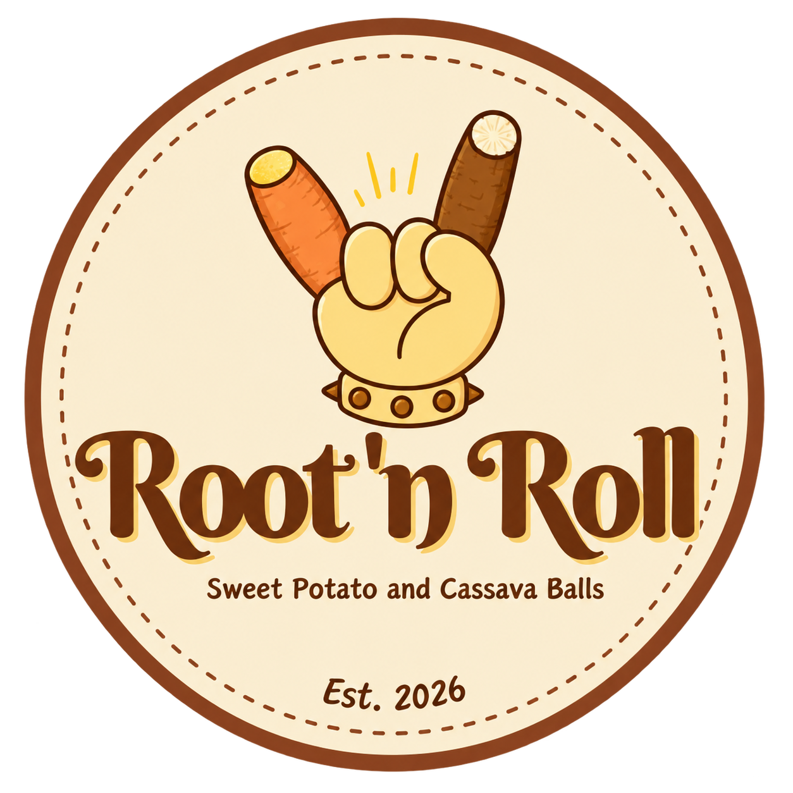
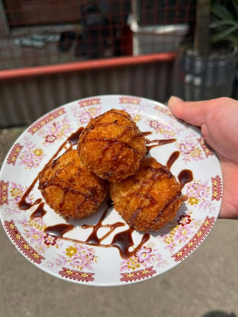
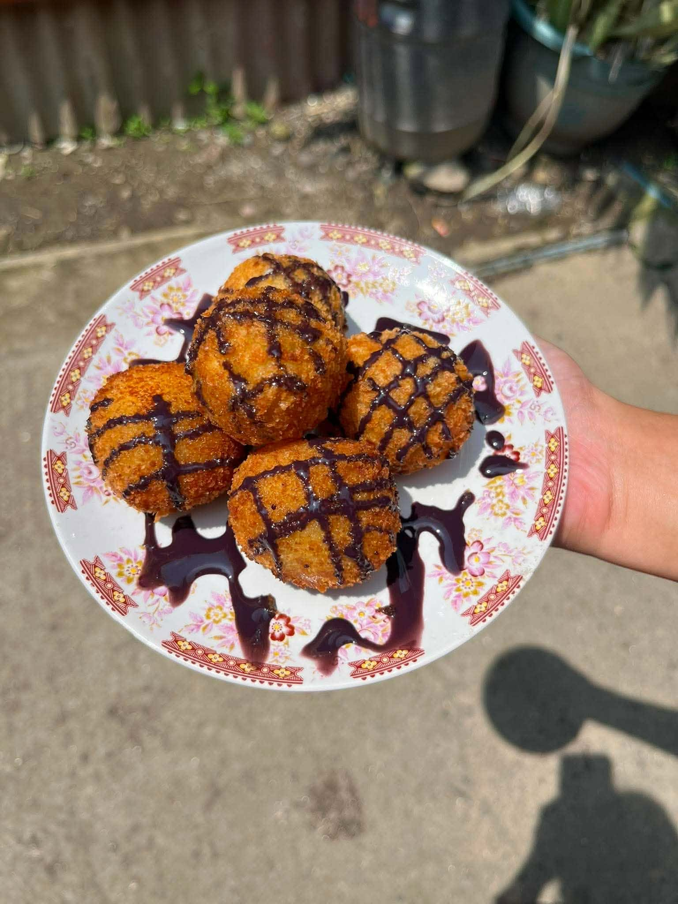
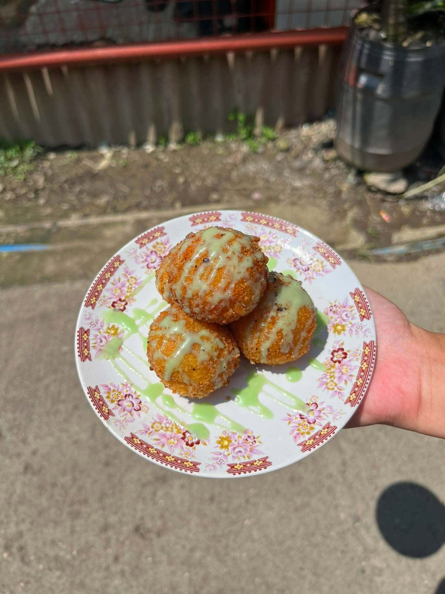
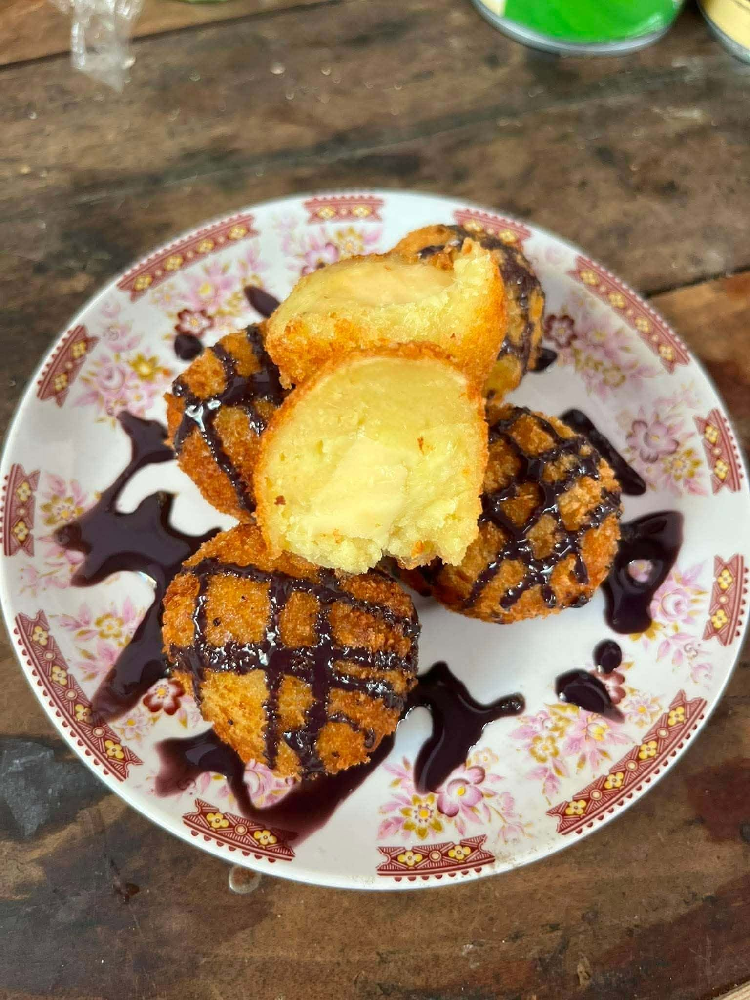
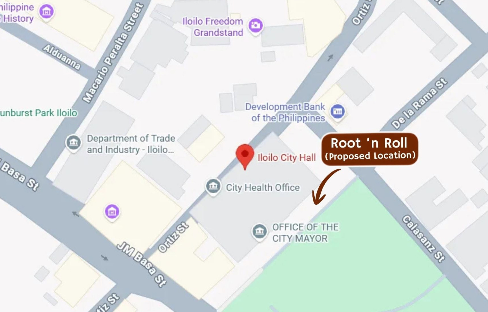

A snack business that offers affordable, delicious, and creative snacks made primarily from locally available root crops such as sweet potato and cassava. Where we ensure the quality, affordability, creativity, and with care and passion. Our goal is to provide products that bring happiness and value to every customer.
The name “Root ’n Roll” was chosen because the business specializes in snacks made primarily from root crops, particularly sweet potato (kamote) and cassava. The word “Root” represents the main ingredients of the products, while “Roll” refers to the process of shaping the mixture into small, round balls before cooking.
The name is simple, distinctive, and easy to remember, making it suitable for the business and its target customers. It represents the business concept of transforming familiar and affordable root crops into a tasty and enjoyable snack. The tagline “Sweet Potato and Cassava Balls” further identifies the main product and gives customers a clear idea of what the business offers, providing the business with a clear and memorable identity that reflects both its product and concept.
To become a successful and well-loved snack business that brings a creative and delicious twist to sweet potatoes and cassava while inspiring student entrepreneurs to turn simple ideas into meaningful and sustainable business opportunities.
Root ’n Roll is committed to providing affordable, delicious, crispy, and quality sweet potato and cassava balls that customers can enjoy. We aim to satisfy our customers through good products and friendly service while continuously improving our business. As student entrepreneurs, we strive to develop our skills, support one another, and work together toward the growth and success of our business.
Explore our products made with creativity and care. Each product is designed to delicious, affordable, and suitable for different customers preference and occasions.

Rich sweet potato or cassava boiled and rolled in to balls with cheese inside then coated with egg and breadcrumbs for that sweet, soft, and cheesy interior, and a crunch in the outside; drizzled with delicious chocolate syrup.
Price: ₱15.00

Rich sweet potato or cassava boiled and rolled in to balls with cheese inside then coated with egg and breadcrumbs for that sweet, soft, and cheesy interior, and a crunch in the outside; drizzled with sweet classic ube syrup.
Price: ₱15.00

Rich sweet potato or cassava boiled and rolled in to balls with cheese inside then coated with egg and breadcrumbs for that sweet, soft, and cheesy interior, and a crunch in the outside; drizzled with tasty pandan syrup.
Price: ₱15.00

This is our sweet potato and cassava balls with cheese inside.
But we also offer a with or without cheese, grated cheese topping, and mixed cheese and syrup toppings depending on customer preference.
Price: ₱15.00 - ₱20.00
We offer student-friendly and reasonable prices while maintaining good product quality so that everyone can enjoy our product.
We carefully prepare our products to ensure the safety and good satisfaction of our customers in which they can enjoy and appreciate.
We turn rich Filipino food crops into a unique, enjoyable, and delicious heart-warming snacks while embracing our Filipino culture.
We value our customers by giving them an attentive service, and making sure to listen at their requests, questions, and suggestions or feedbacks.
Customers may request prefered variety on our menu depending on their preferred syrups, toppings, or even mixed toppings.
Customers can place orders through Merkado Lokal, or on our social media accounts or contact information.
We are open to special requests and will do our best to serve products according to the customer's needs and wants.

Address:
Iloilo City Hall Grounds, Plaza Libertad, Iloilo City
Nearby Landmark:
In front of Ker and Co. Bldg. (lunok tree area)
Business Hours:
Thursdays: 11:00 AM - 5:00 PM (physical store)
Monday - Saturday: 8:00 AM - 6:00 PM (pre-orders)
Have questions or want to place an order? Feel free to contact us!
Facebook: Root n’ Roll
Email: rootnroll@gmail.com
Phone: 0994 027 5635